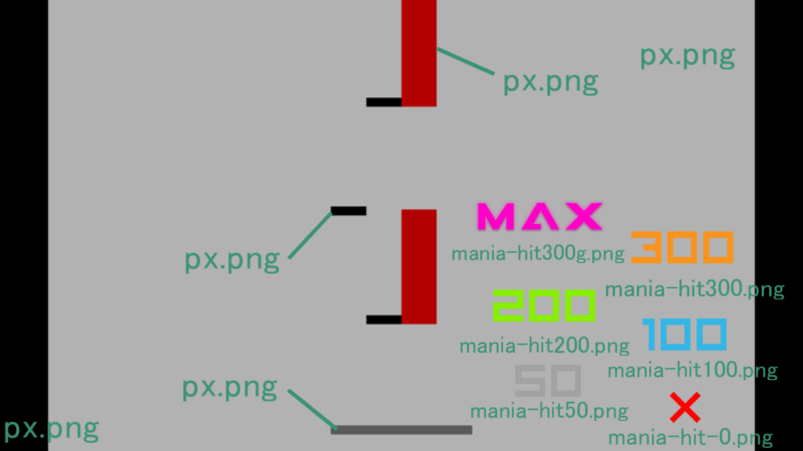

osu! mania の判定SB

これはmapping判定を使用する際に必要なもので単体では動作しません
Story Boardで判定機能を作成してくれる機能を持ちます
Osu!mania の
[HitObject]
の中身を左のテキストボックスにすべてコピペしてください
その曲の各種設定を入力してください
作成ボタンを押すと右のテキストボックスに.osbのコードが出てくるので、
[Overlay]
にコピペしてください
素材を.osuと同じdirectryに入れることで動作するはずです
素材ダウンロード
OD =
0
1
2
3
4
5
6
7
8
9
10
last Offset =